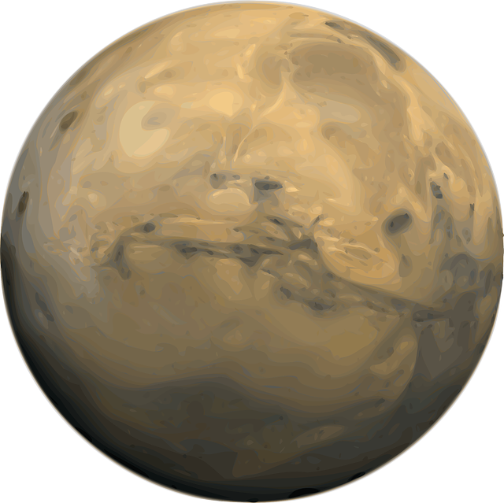
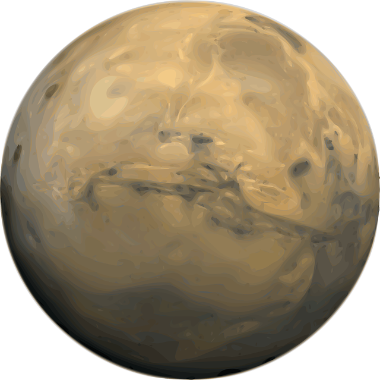

A Naprendszer egy hatalmas, a Nap gravitációja által egyben tartott bolygórendszer, amely a Tejútrendszer egyik csillagrendszere. Galaxisunk Orion spirálkarjának közepétől nagyjából félúton helyezkedik el, és határa a Naptól számítva 8-10 billió kilométer távolságra, azaz körülbelül 1 fényév
Hogyan alakult ki a Naprendszer?
4,6 milliárd évvel ezelőtt egy hatalmas gázfelhő összehúzódott, és létrehozta a Napunkat, a központi csillagot. Ezt követően egy protoplanetáris korongban kezdtek formálódni az első bolygók. A Naprendszer két fő zónájában - a belső és külső régiókban - egymástól különböző típusú bolygók alakultak ki.
Belső rendszer:
4 kőzetbolygó

 

Külső rendszer:
4 gázóriás


A Naprendszer égitestjei
A bolygók mellett számos más érdekes égitest is található:
Aszteroidák

Törpebolygók
Holdak és gyűrűk
Mi rejlik még a Naprendszerben?
- Szabadon keringő testek: üstökösök, kentaurok, űrben szóródó por
- Napszél: A Napból kiáramló részecskeáram hatással van minden égitestre a rendszerben. A napszél kitölti az egész rendszert, és kijelöli annak határvonalát is: a heliopauza az a terület, ahol más csillagok szeleinek nyomása kiegyenlíti a Nap hatását. Ezt a határt tekintjük a Naprendszer külső végének, bár az Oort-felhő még ezen a határon belül van.